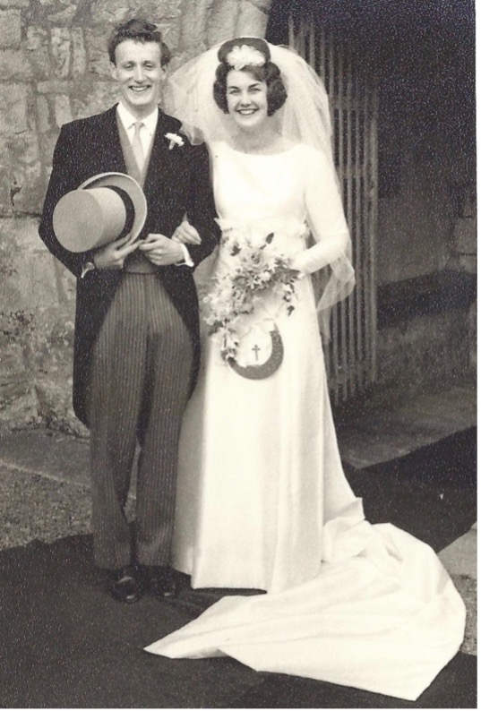
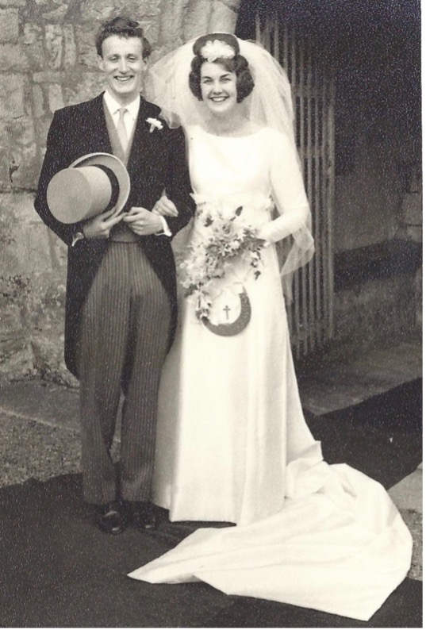

WHY THE BUNNY?
Mel Wright
On 12th September 1964, Judith (Judy) Ann Welbourn married William (Bill) Rutherford Basham in St Martin’s Church, Seamer. Not once did she consider that a bunny would somehow become synonymous with her husband. And certainly not for the reasons one might imagine. How could she have predicted that 50 years later, on 9th August 2014, whilst celebrating their golden wedding anniversary with their children and grandchildren, the rabbit’s fertile symbolism would sow the seed for an annual family event, The Bunny Cup Challenge.

So, what was the connection of the bunny to Bill? I confess I’m not entirely sure how or why creating the best bunny face started, but Bill’s skills seemed to stem from a combination of teeth, tash and technique. Step 1: Preparation: warm up the mouth, nose and tash (if present) to embody the bunny spirit. Step 2: With a degree of vigour, sharply retract the lips to reveal the upper front teeth and wrinkle the nose. Step 3: Adopt a rigid front paw position with both hands bent at the wrist and held chest high. Hold this pose. Experience The Bunny
“Do a bunny, Dad” was most commonly requested by their children, Mark and Melanie. Sometimes Bill just couldn’t contain his alter-ego and it would simply break free, presenting itself at family gatherings and in restaurants. It became a family challenge; who else could do a good bunny? Bill’s sister, Ann, or Tante as she became known as during the 1980’s Brussels years, showed particular potential. An initiation task for prospective partners, the Bunny could confound even the most proficient ham carvers or crew members being made to do an overnight trip to France on board Compromise Deux or Morangie.
The Bunny spirit was supremely captured by the golden bunny statue chosen by Nikki Basham, the ‘best’ of 50 golden gifts presented to Bill and Judy by their family. It launched the idea of an annual family challenge, the Bunny became the trophy, and a new chapter in the Basham family saga began.

So, what was the connection of the bunny to Bill? I confess I’m not entirely sure how or why creating the best bunny face started, but Bill’s skills seemed to stem from a combination of teeth, tash and technique. Step 1: Preparation: warm up the mouth, nose and tash (if present) to embody the bunny spirit. Step 2: With a degree of vigour, sharply retract the lips to reveal the upper front teeth and wrinkle the nose. Step 3: Adopt a rigid front paw position with both hands bent at the wrist and held chest high. Hold this pose. Experience The Bunny
“Do a bunny, Dad” was most commonly requested by their children, Mark and Melanie. Sometimes Bill just couldn’t contain his alter-ego and it would simply break free, presenting itself at family gatherings and in restaurants. It became a family challenge; who else could do a good bunny? Bill’s sister, Ann, or Tante as she became known as during the 1980’s Brussels years, showed particular potential. An initiation task for prospective partners, the Bunny could confound even the most proficient ham carvers or crew members being made to do an overnight trip to France on board Compromise Deux or Morangie.
The Bunny spirit was supremely captured by the golden bunny statue chosen by Nikki Basham, the ‘best’ of 50 golden gifts presented to Bill and Judy by their family. It launched the idea of an annual family challenge, the Bunny became the trophy, and a new chapter in the Basham family saga began.